2022 Advanced Higher Physics marking instructions
Source: Scottish Qualifications Authority (SQA) / Qualifications Scotland. This is a StemInteract HTML companion, not an official HTML edition. Selectable text is supplied alongside original page images. Use the images or original PDF for equations, powers, fractions, vector notation, tables and diagrams; text extraction cannot fully preserve mathematical layout.
Jump to a question
PDF page 1
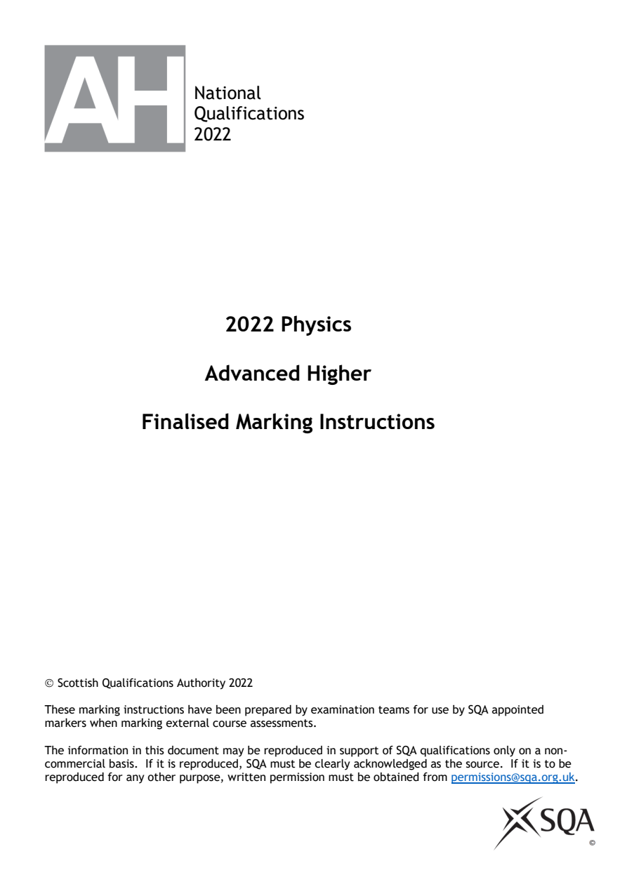
Selectable page text
National
Qualifications
2022
2022 Physics
Advanced Higher
Finalised Marking Instructions
© Scottish Qualifications Authority 2022
These marking instructions have been prepared by examination teams for use by SQA appointed
markers when marking external course assessments.
The information in this document may be reproduced in support of SQA qualifications only on a non-
commercial basis. If it is reproduced, SQA must be clearly acknowledged as the source. If it is to be
reproduced for any other purpose, written permission must be obtained from permissions@sqa.org.uk.PDF page 2
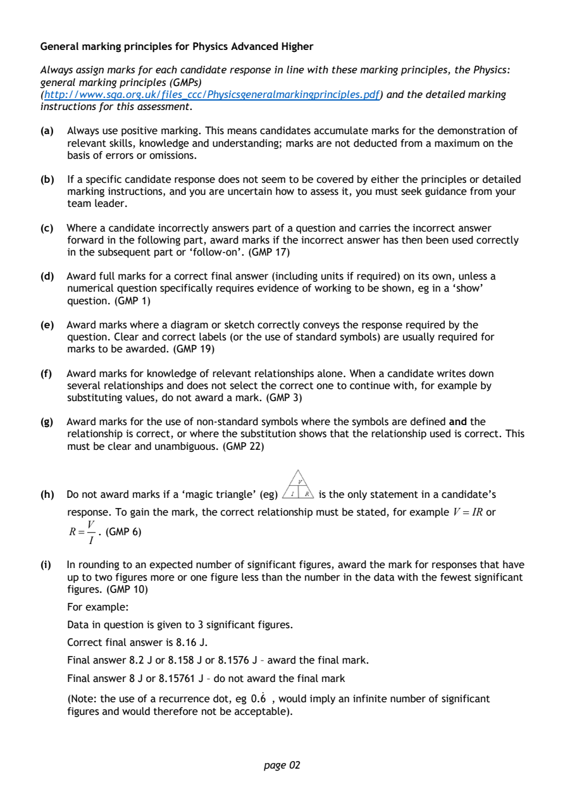
Selectable page text
General marking principles for Physics Advanced Higher
Always assign marks for each candidate response in line with these marking principles, the Physics:
general marking principles (GMPs)
(http://www.sqa.org.uk/files_ccc/Physicsgeneralmarkingprinciples.pdf) and the detailed marking
instructions for this assessment.
(a) Always use positive marking. This means candidates accumulate marks for the demonstration of
relevant skills, knowledge and understanding; marks are not deducted from a maximum on the
basis of errors or omissions.
(b) If a specific candidate response does not seem to be covered by either the principles or detailed
marking instructions, and you are uncertain how to assess it, you must seek guidance from your
team leader.
(c) Where a candidate incorrectly answers part of a question and carries the incorrect answer
forward in the following part, award marks if the incorrect answer has then been used correctly
in the subsequent part or ‘follow-on’. (GMP 17)
(d) Award full marks for a correct final answer (including units if required) on its own, unless a
numerical question specifically requires evidence of working to be shown, eg in a ‘show’
question. (GMP 1)
(e) Award marks where a diagram or sketch correctly conveys the response required by the
question. Clear and correct labels (or the use of standard symbols) are usually required for
marks to be awarded. (GMP 19)
(f) Award marks for knowledge of relevant relationships alone. When a candidate writes down
several relationships and does not select the correct one to continue with, for example by
substituting values, do not award a mark. (GMP 3)
(g) Award marks for the use of non-standard symbols where the symbols are defined and the
relationship is correct, or where the substitution shows that the relationship used is correct. This
must be clear and unambiguous. (GMP 22)
(h) Do not award marks if a ‘magic triangle’ (eg) is the only statement in a candidate’s
response. To gain the mark, the correct relationship must be stated, for example V = IR or
V
R= . (GMP 6)
I
(i) In rounding to an expected number of significant figures, award the mark for responses that have
up to two figures more or one figure less than the number in the data with the fewest significant
figures. (GMP 10)
For example:
Data in question is given to 3 significant figures.
Correct final answer is 8.16 J.
Final answer 8.2 J or 8.158 J or 8.1576 J – award the final mark.
Final answer 8 J or 8.15761 J – do not award the final mark
(Note: the use of a recurrence dot, eg 0.6 , would imply an infinite number of significant
figures and would therefore not be acceptable).
page 02PDF page 3
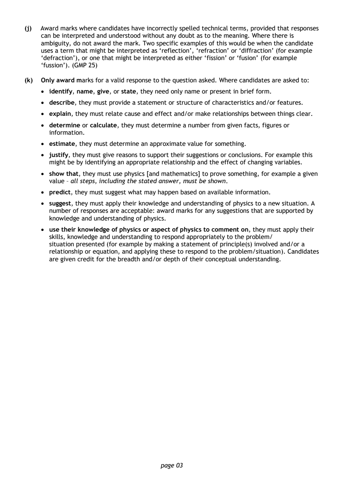
Selectable page text
(j) Award marks where candidates have incorrectly spelled technical terms, provided that responses
can be interpreted and understood without any doubt as to the meaning. Where there is
ambiguity, do not award the mark. Two specific examples of this would be when the candidate
uses a term that might be interpreted as ‘reflection’, ‘refraction’ or ‘diffraction’ (for example
‘defraction’), or one that might be interpreted as either ‘fission’ or ‘fusion’ (for example
‘fussion’). (GMP 25)
(k) Only award marks for a valid response to the question asked. Where candidates are asked to:
• identify, name, give, or state, they need only name or present in brief form.
• describe, they must provide a statement or structure of characteristics and/or features.
• explain, they must relate cause and effect and/or make relationships between things clear.
• determine or calculate, they must determine a number from given facts, figures or
information.
• estimate, they must determine an approximate value for something.
• justify, they must give reasons to support their suggestions or conclusions. For example this
might be by identifying an appropriate relationship and the effect of changing variables.
• show that, they must use physics [and mathematics] to prove something, for example a given
value – all steps, including the stated answer, must be shown.
• predict, they must suggest what may happen based on available information.
• suggest, they must apply their knowledge and understanding of physics to a new situation. A
number of responses are acceptable: award marks for any suggestions that are supported by
knowledge and understanding of physics.
• use their knowledge of physics or aspect of physics to comment on, they must apply their
skills, knowledge and understanding to respond appropriately to the problem/
situation presented (for example by making a statement of principle(s) involved and/or a
relationship or equation, and applying these to respond to the problem/situation). Candidates
are given credit for the breadth and/or depth of their conceptual understanding.
page 03PDF page 4
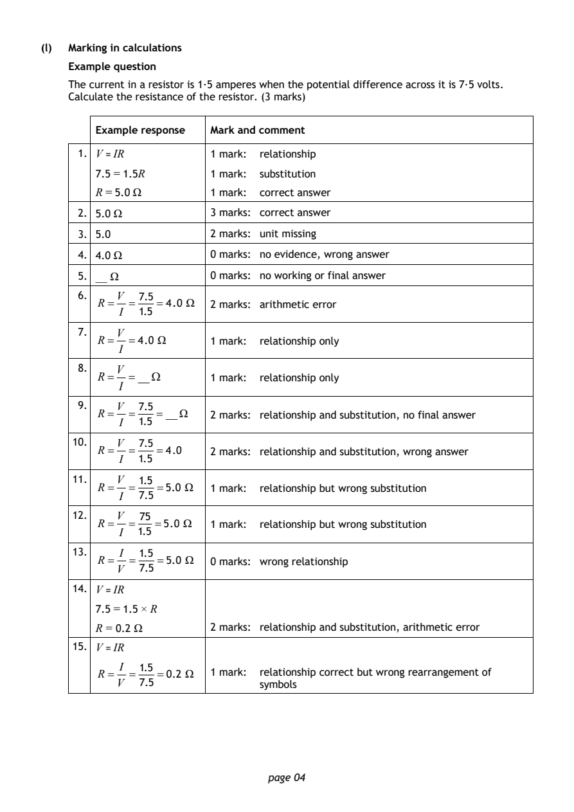
Selectable page text
(l) Marking in calculations
Example question
The current in a resistor is 1·5 amperes when the potential difference across it is 7·5 volts.
Calculate the resistance of the resistor. (3 marks)
Example response Mark and comment
1. V = IR 1 mark: relationship
7.5 = 1.5R 1 mark: substitution
R = 5.0 Ω 1 mark: correct answer
2. 5.0 Ω 3 marks: correct answer
3. 5.0 2 marks: unit missing
4. 4.0 Ω 0 marks: no evidence, wrong answer
5. __ Ω 0 marks: no working or final answer
6. V 7.5
R= = =4.0 Ω 2 marks: arithmetic error
I 1.5
7. V
R= =4.0 Ω 1 mark: relationship only
I
8. V
R= = __Ω 1 mark: relationship only
I
9. V 7.5
R= = = __Ω 2 marks: relationship and substitution, no final answer
I 1.5
10. V 7.5
R= = =4.0 2 marks: relationship and substitution, wrong answer
I 1.5
11. V 1.5
R= = =5.0 Ω 1 mark: relationship but wrong substitution
I 7.5
12. V 75
R= = =5.0 Ω 1 mark: relationship but wrong substitution
I 1.5
13. I 1.5
R = = =5.0 Ω 0 marks: wrong relationship
V 7.5
14. V = IR
7.5 = 1.5 × R
R = 0.2 Ω 2 marks: relationship and substitution, arithmetic error
15. V = IR
I 1.5
R = = =0.2 Ω 1 mark: relationship correct but wrong rearrangement of
V 7.5 symbols
page 04PDF page 5
Question 1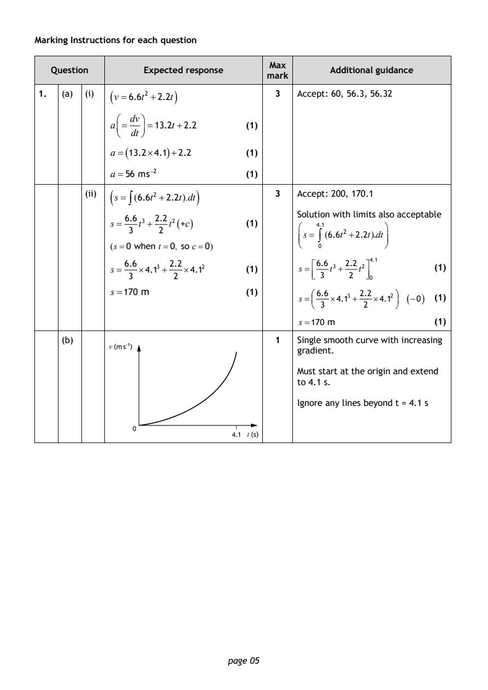
Selectable page text
Marking Instructions for each question
Max
Question Expected response Additional guidance
mark
1. (a) (i) ( ) 3 Accept: 60, 56.3, 56.32
v =6.6t² +2.2t
dv
a = =13.2t+2.2 (1)
dt
a=(13.2×4.1)+2.2 (1)
a =56 ms⁻² (1)
(ii) ( ) 3 Accept: 200, 170.1
s=∫(6.6t² +2.2t).dt
Solution with limits also acceptable
6.6 2.2
s= t³+ t²(+c) (1)
3 2
s=⁴∫^{.}¹(6.6t²+2.2t).dt
(s=0 when t=0, so c=0) 0
6.6 2.2 6.6 2.2 ⁴
s= ×4.1³+ ×4.1² (1) s= t³+ t² ^{.}¹ (1)
3 2 3 2
0
s=170 m (1) 6.6 2.2
s= ×4.1³+ ×4.1² (−0) (1)
3 2
s=170 m (1)
(b) 1 Single smooth curve with increasing
gradient.
Must start at the origin and extend
to 4.1 s.
Ignore any lines beyond t = 4.1 s
page 05PDF page 6
Question 2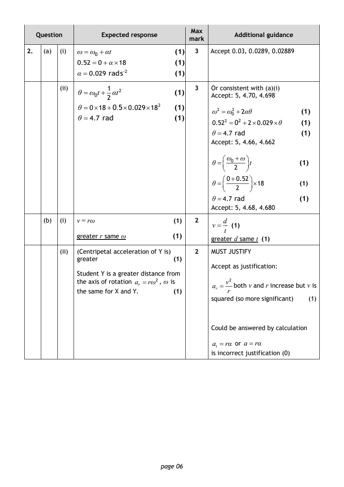
Selectable page text
Max
Question Expected response Additional guidance
mark
2. (a) (i) ω=ω₀ +αt (1) 3 Accept 0.03, 0.0289, 0.02889
0.52=0+α×18 (1)
α =0.029 rads⁻² (1)
(ii) 1 3 Or consistent with (a)(i)
θ =ω₀t+ αt² (1)
Accept: 5, 4.70, 4.698
2
θ =0×18+0.5×0.029×18² (1)
ω² =ω₀² +2αθ (1)
θ = 4.7 rad (1)
0.52² =0² +2×0.029×θ (1)
θ = 4.7 rad (1)
Accept: 5, 4.66, 4.662
ω₀ +ω
θ = t (1)
2
0+0.52
θ = ×18 (1)
2
θ =4.7 rad (1)
Accept: 5, 4.68, 4.680
(b) (i) v = rω (1) 2 d
v = (1)
t
greater r same ω (1)
greater d same t (1)
(ii) (Centripetal acceleration of Y is) 2 MUST JUSTIFY
greater (1)
Accept as justification:
Student Y is a greater distance from
the axis of rotation aᵣ =rω², ω is v²
aᵣ = both v and r increase but v is
the same for X and Y. (1) r
squared (so more significant) (1)
Could be answered by calculation
aₜ =rα or a =rα
is incorrect justification (0)
page 06PDF page 7
Question 3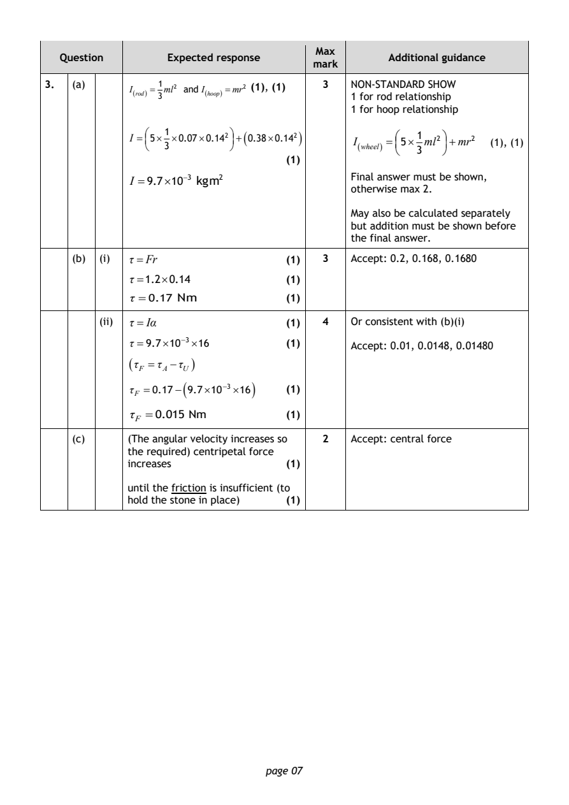
Selectable page text
Max
Question Expected response Additional guidance
mark
3. (a) I ᵣₒ_{d} = 1 ml² and Iₕₒₒₚ =mr² (1), (1) 3 NON-STANDARD SHOW
( ) 3 ( ) 1 for rod relationship
1 for hoop relationship
I = 5× 1 ×0.07×0.14² + ( 0.38×0.14² )
I _{w}ₕₑₑ =
5×
1
ml²
+mr² (1), (1)
3 ( l)
3
(1)
Final answer must be shown,
I =9.7×10⁻³ kgm²
otherwise max 2.
May also be calculated separately
but addition must be shown before
the final answer.
(b) (i) τ =Fr (1) 3 Accept: 0.2, 0.168, 0.1680
τ =1.2×0.14 (1)
τ =0.17 Nm (1)
(ii) τ =Iα (1) 4 Or consistent with (b)(i)
τ =9.7×10⁻³×16 (1) Accept: 0.01, 0.0148, 0.01480
(τ_{F} =τ_{A}−τ_{U})
( )
τ_{F} =0.17− 9.7×10⁻³×16 (1)
τ_{F} =0.015 Nm (1)
(c) (The angular velocity increases so 2 Accept: central force
the required) centripetal force
increases (1)
until the friction is insufficient (to
hold the stone in place) (1)
page 07PDF page 8
Question 4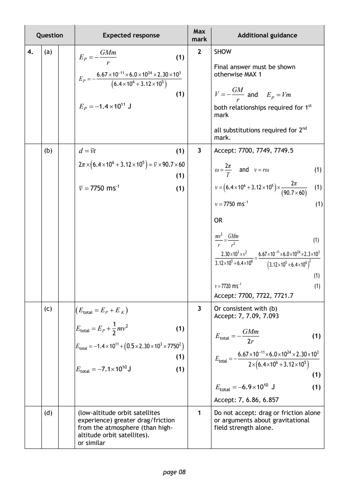
Selectable page text
Max
Question Expected response Additional guidance
mark
4. (a) GMm 2 SHOW
E_{P} =− (1)
r
Final answer must be shown
6.67×10⁻¹¹×6.0×10²⁴×2.30×10³ otherwise MAX 1
E_{P} =−
( )
6.4×10⁶+3.12×10⁵
GM
(1) V =− and Eₚ =Vm
r
E_{P} =−1.4×10¹¹ J both relationships required for 1^{s}^{t}
mark
all substitutions required for 2ⁿ^{d}
mark.
(b) d =vt (1) 3 Accept: 7700, 7749, 7749.5
( )
2π× 6.4×10⁶+3.12×10⁵ =v×90.7×60 2π
ω= and v=rω (1)
(1) T
2π
v =7750 ms⁻¹ (1) v=
(
6.4×10⁶+3.12×10⁵
)
× (1)
(90.7×60)
v=7750 ms⁻¹ (1)
OR
mv² GMm
= (1)
r r²
2.30×10³×v² 6.67×10⁻¹¹×6.0×10²⁴×2.3×10³
=
3.12×10⁵+6.4×10⁶ ( 3.12×10⁵+6.4×10⁶ ) ²
(1)
v=7720 ms⁻¹ (1)
Accept: 7700, 7722, 7721.7
(c) (Eₜₒₜₐₗ = E_{P} +E_{K}) 3 Or consistent with (b)
Accept: 7, 7.09, 7.093
1
Eₜₒₜₐₗ = E_{P} + mv² (1)
GMm
2
Eₜₒₜₐₗ =− (1)
2r
( )
Eₜₒₜₐₗ =−1.4×10¹¹+ 0.5×2.30×10³×7750²
6.67×10⁻¹¹×6.0×10²⁴×2.30×10³
(1) Eₜₒₜₐₗ =−
( )
2× 6.4×10⁶+3.12×10⁵
Eₜₒₜₐₗ =−7.1×10¹⁰J (1)
(1)
Eₜₒₜₐₗ =−6.9×10¹⁰ J (1)
Accept: 7, 6.86, 6.857
(d) (low-altitude orbit satellites 1 Do not accept: drag or friction alone
experience) greater drag/friction or arguments about gravitational
from the atmosphere (than high- field strength alone.
altitude orbit satellites).
or similar
page 08PDF page 9
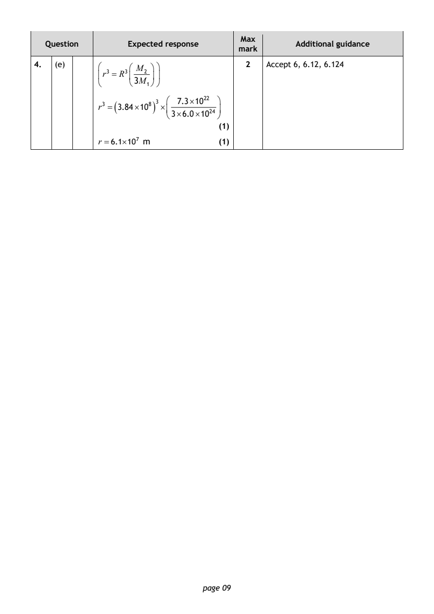
Selectable page text
Max
Question Expected response Additional guidance
mark
4. (e) 2 Accept 6, 6.12, 6.124
M₂
r³ = R³
3M₁
7.3×10²²
( )
r³ = 3.84×10⁸ ³×
3×6.0×10²⁴
(1)
r =6.1×10⁷ m (1)
page 09PDF page 10
Question 5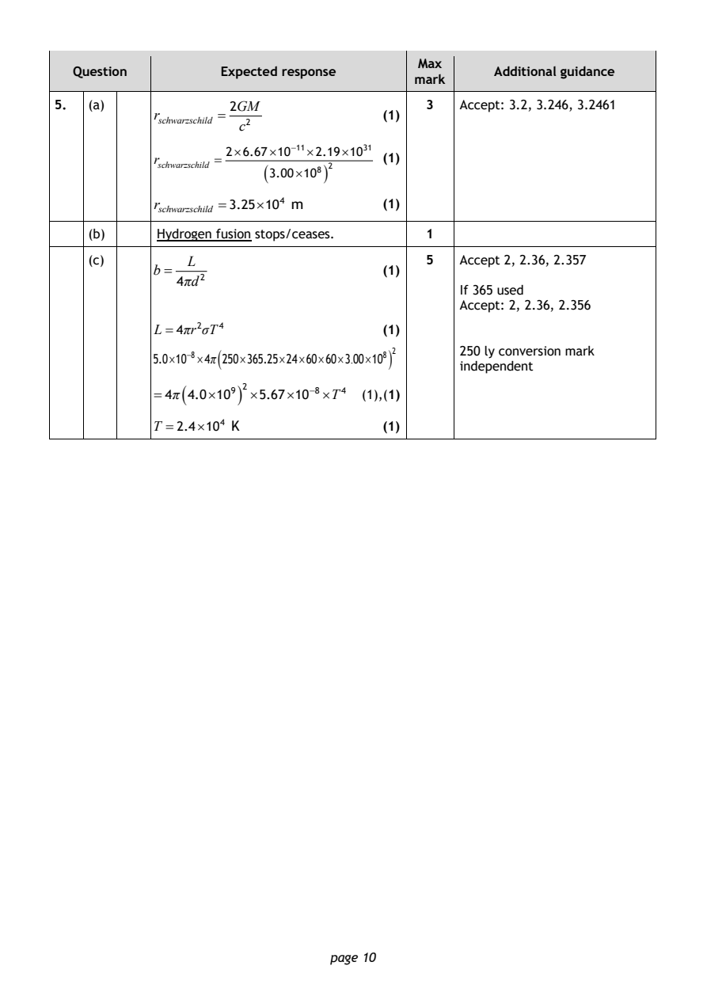
Selectable page text
Max
Question Expected response Additional guidance
mark
5. (a) 2GM 3 Accept: 3.2, 3.246, 3.2461
rₛ_{c}ₕ_{w}ₐᵣ = (1)
zschild
c²
2×6.67×10⁻¹¹×2.19×10³¹
rₛ_{c}ₕ_{w}ₐᵣ = (1)
zschild ( )
3.00×10⁸ ²
rₛ_{c}ₕ_{w}ₐᵣ =3.25×10⁴ m (1)
zschild
(b) Hydrogen fusion stops/ceases. 1
(c) L 5 Accept 2, 2.36, 2.357
b= (1)
4πd²
If 365 used
Accept: 2, 2.36, 2.356
L=4πr²σT⁴ (1)
( ) 250 ly conversion mark
5.0×10⁻⁸×4π 250×365.25×24×60×60×3.00×10⁸ ²
i ndependent
( )
=4π 4.0×10⁹ ²×5.67×10⁻⁸×T⁴ (1),(1)
T =2.4×10⁴ K (1)
page 10PDF page 11
Selectable page text
Max
Question Expected response Additional guidance
mark
5. (d) Award 3 marks where the candidate 3 Candidates may use a variety of
has demonstrated a good physics arguments to answer this
understanding of the physics question.
involved. They show a good
comprehension of the physics of the Award marks based on candidates
situation and provide a logically demonstrating overall good,
correct answer to the question reasonable, limited, or no
posed. This type of response might understanding.
include a statement of the
principles involved, a relationship or
an equation, and the application of
these to respond to the problem.
The answer does not need to be
‘excellent’ or ‘complete’ for the
candidate to gain full marks.
Award 2 marks where the candidate
has demonstrated a reasonable
understanding of the physics
involved. They make some
statement(s) that are relevant to
the situation, showing that they
have understood the problem.
Award 1 mark where the candidate
has demonstrated a limited
understanding of the physics
involved. They make some
statement(s) that are relevant to
the situation, showing that they
have understood at least a little of
the physics within the problem.
Award 0 marks where the candidate
has not demonstrated an
understanding of the physics
involved. There is no evidence that
they have recognised the area of
physics involved, or they have not
given any statement of a relevant
physics principle.
Award this mark also if the
candidate merely restates the
physics given in the question.
page 11PDF page 12
Question 6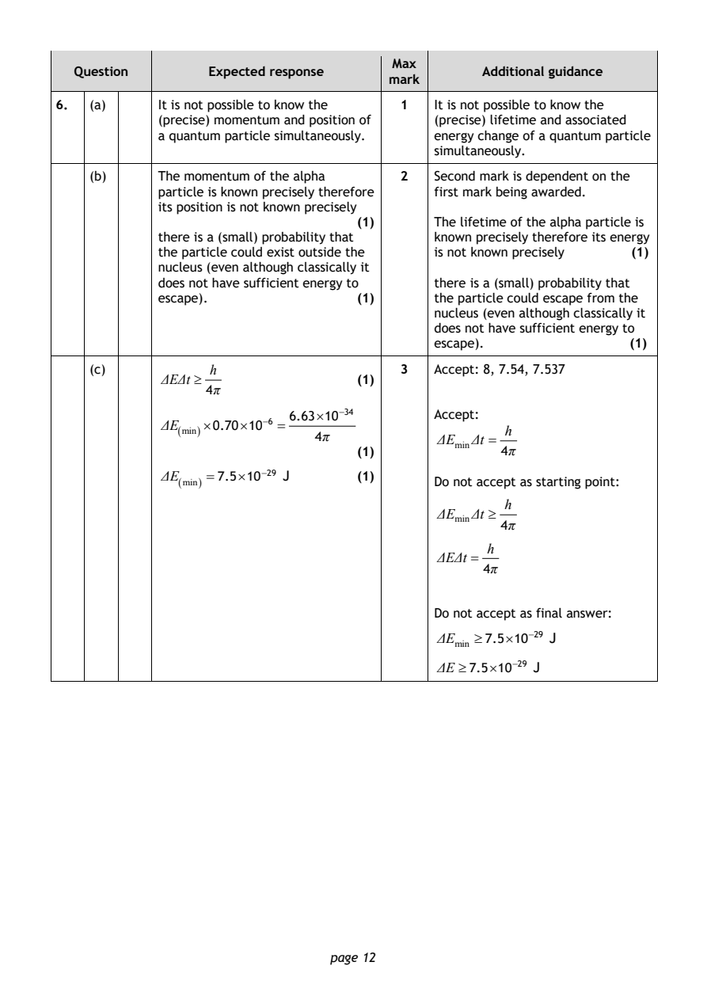
Selectable page text
Max
Question Expected response Additional guidance
mark
6. (a) It is not possible to know the 1 It is not possible to know the
(precise) momentum and position of (precise) lifetime and associated
a quantum particle simultaneously. energy change of a quantum particle
simultaneously.
(b) The momentum of the alpha 2 Second mark is dependent on the
particle is known precisely therefore first mark being awarded.
its position is not known precisely
(1) The lifetime of the alpha particle is
there is a (small) probability that known precisely therefore its energy
the particle could exist outside the is not known precisely (1)
nucleus (even although classically it
does not have sufficient energy to there is a (small) probability that
escape). (1) the particle could escape from the
nucleus (even although classically it
does not have sufficient energy to
escape). (1)
(c) h 3 Accept: 8, 7.54, 7.537
ΔEΔt ≥ (1)
4π
6.63×10⁻³⁴ Accept:
ΔEₘᵢₙ ×0.70×10⁻⁶ =
( ) h
4π
ΔEₘᵢₙΔt =
(1) 4π
ΔE ₘᵢₙ =7.5×10⁻²⁹ J (1)
( ) Do not accept as starting point:
h
ΔEₘᵢₙΔt ≥
4π
h
ΔEΔt =
4π
Do not accept as final answer:
ΔEₘᵢₙ ≥7.5×10⁻²⁹ J
ΔE ≥7.5×10⁻²⁹ J
page 12PDF page 13
Question 7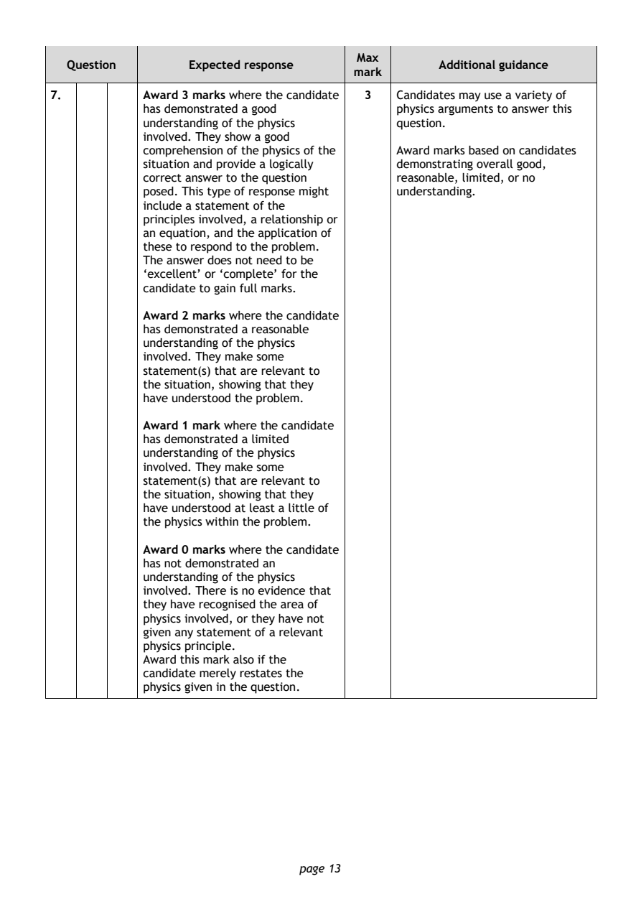
Selectable page text
Max
Question Expected response Additional guidance
mark
7. Award 3 marks where the candidate 3 Candidates may use a variety of
has demonstrated a good physics arguments to answer this
understanding of the physics question.
involved. They show a good
comprehension of the physics of the Award marks based on candidates
situation and provide a logically demonstrating overall good,
correct answer to the question reasonable, limited, or no
posed. This type of response might understanding.
include a statement of the
principles involved, a relationship or
an equation, and the application of
these to respond to the problem.
The answer does not need to be
‘excellent’ or ‘complete’ for the
candidate to gain full marks.
Award 2 marks where the candidate
has demonstrated a reasonable
understanding of the physics
involved. They make some
statement(s) that are relevant to
the situation, showing that they
have understood the problem.
Award 1 mark where the candidate
has demonstrated a limited
understanding of the physics
involved. They make some
statement(s) that are relevant to
the situation, showing that they
have understood at least a little of
the physics within the problem.
Award 0 marks where the candidate
has not demonstrated an
understanding of the physics
involved. There is no evidence that
they have recognised the area of
physics involved, or they have not
given any statement of a relevant
physics principle.
Award this mark also if the
candidate merely restates the
physics given in the question.
page 13PDF page 14
Question 8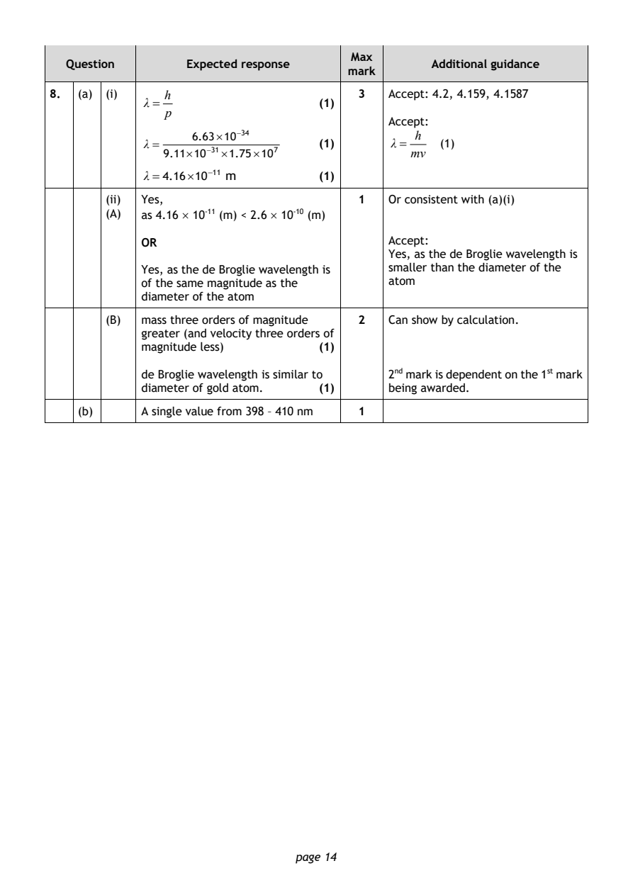
Selectable page text
Max
Question Expected response Additional guidance
mark
8. (a) (i) h 3 Accept: 4.2, 4.159, 4.1587
λ= (1)
p
Accept:
6.63×10⁻³⁴ h
λ= (1) λ= (1)
9.11×10⁻³¹×1.75×10⁷ mv
λ=4.16×10⁻¹¹ m (1)
(ii) Yes, 1 Or consistent with (a)(i)
(A) as 4.16 × 10⁻¹¹ (m) < 2.6 × 10⁻¹⁰ (m)
OR Accept:
Yes, as the de Broglie wavelength is
Yes, as the de Broglie wavelength is smaller than the diameter of the
of the same magnitude as the atom
diameter of the atom
(B) mass three orders of magnitude 2 Can show by calculation.
greater (and velocity three orders of
magnitude less) (1)
de Broglie wavelength is similar to 2ⁿ^{d} mark is dependent on the 1^{s}^{t} mark
diameter of gold atom. (1) being awarded.
(b) A single value from 398 – 410 nm 1
page 14PDF page 15
Question 9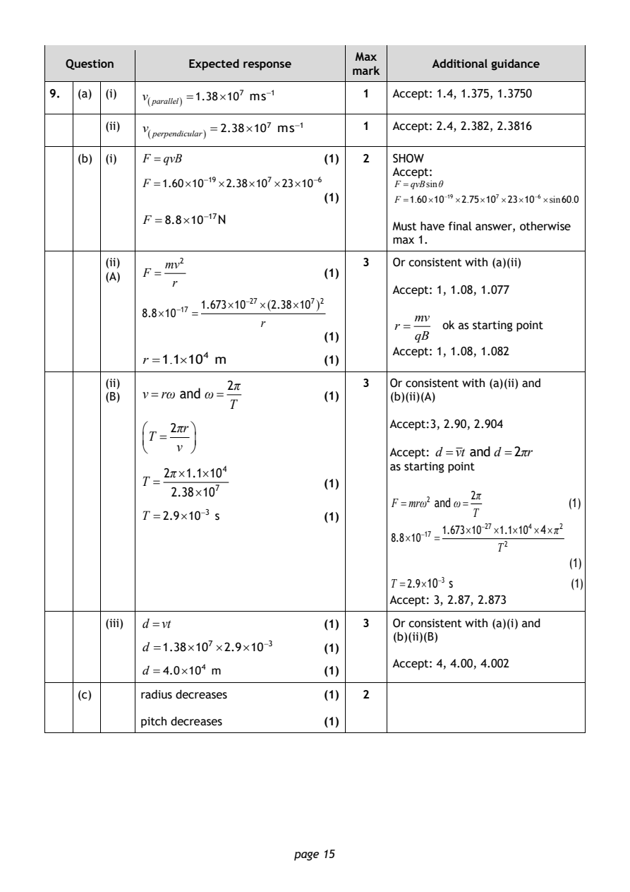
Selectable page text
Max
Question Expected response Additional guidance
mark
9. (a) (i) v ₚₐᵣₐ =1.38×10⁷ ms⁻¹ 1 Accept: 1.4, 1.375, 1.3750
( llel)
(ii) v ₚₑᵣₚ =2.38×10⁷ ms⁻¹ 1 Accept: 2.4, 2.382, 2.3816
( endicular)
(b) (i) F =qvB (1) 2 SHOW
Accept:
F =1.60×10⁻¹⁹×2.38×10⁷×23×10⁻⁶ F=qvBsinθ
(1) F=1.60×10⁻¹⁹×2.75×10⁷×23×10⁻⁶×sin60.0
F =8.8×10⁻¹⁷N
Must have final answer, otherwise
max 1.
(ii) mv² 3 Or consistent with (a)(ii)
(A)
F = (1)
r
Accept: 1, 1.08, 1.077
1.673×10⁻²⁷×(2.38×10⁷)²
8.8×10⁻¹⁷ =
mv
r r = ok as starting point
(1) qB
Accept: 1, 1.08, 1.082
r =1.1×10⁴ m (1)
(ii) 2π 3 Or consistent with (a)(ii) and
(B) v=rω and ω= (1) (b)(ii)(A)
T
Accept:3, 2.90, 2.904
2πr
T =
v
Accept: d =vt and d =2πr
as starting point
2π×1.1×10⁴
T = (1)
2.38×10⁷
2π
F=mrω² and ω= (1)
T =2.9×10⁻³ s (1) T
1.673×10⁻²⁷×1.1×10⁴×4×π²
8.8×10⁻¹⁷ =
T²
(1)
T =2.9×10⁻³ s (1)
Accept: 3, 2.87, 2.873
(iii) d =vt (1) 3 Or consistent with (a)(i) and
(b)(ii)(B)
d =1.38×10⁷×2.9×10⁻³ (1)
Accept: 4, 4.00, 4.002
d =4.0×10⁴ m (1)
(c) radius decreases (1) 2
pitch decreases (1)
page 15PDF page 16
Question 10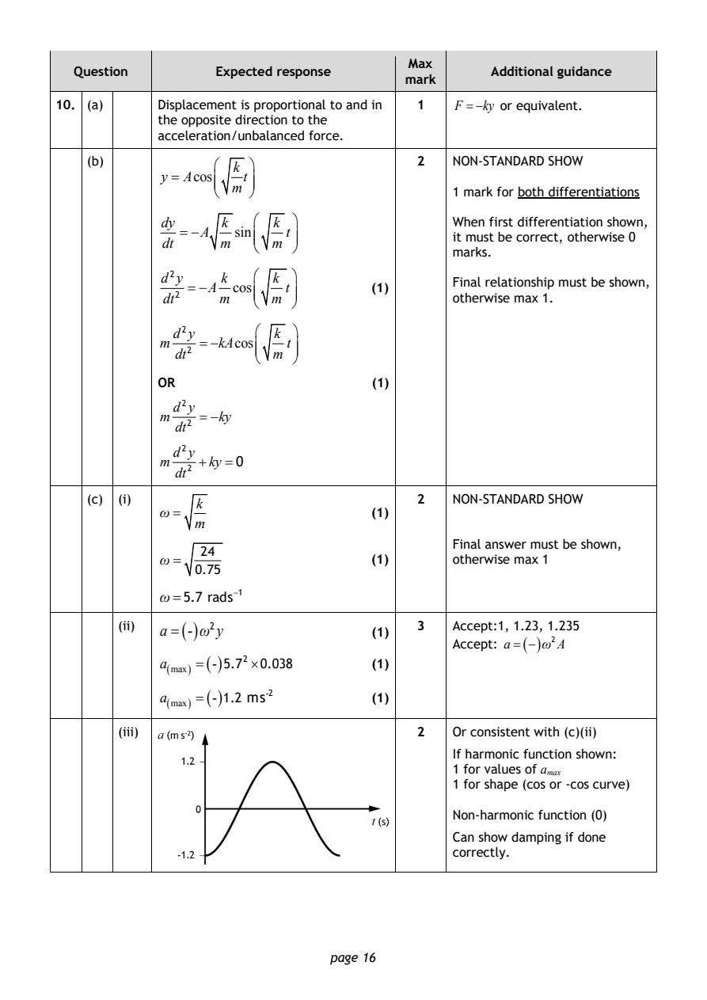
Selectable page text
Max
Question Expected response Additional guidance
mark
10. (a) Displacement is proportional to and in 1 F =−ky or equivalent.
the opposite direction to the
acceleration/unbalanced force.
(b) k 2 NON-STANDARD SHOW
y = Acos t
m
1 mark for both differentiations
dy k k When first differentiation shown,
=−A sin t
it must be correct, otherwise 0
dt m m
marks.
d²y k k
Final relationship must be shown,
=−A cos t (1)
dt² m m otherwise max 1.
d²y k
m =−kAcos t
dt² m
OR (1)
d²y
m =−ky
dt²
d²y
m +ky =0
dt²
(c) (i) 2 NON-STANDARD SHOW
k
ω= (1)
m
Final answer must be shown,
24
ω= (1) otherwise max 1
0.75
ω=5.7 rads⁻¹
(ii) a=(-)ω²y
(1)
3 Accept:1, 1.23, 1.235
Accept: a=(−)ω²A
a ₘₐₓ =(-)5.7²×0.038 (1)
( )
a ₘₐₓ =(-)1.2 ms⁻² (1)
( )
(iii) 2 Or consistent with (c)(ii)
If harmonic function shown:
1 for values of a
1 for shape (cos ^{m}o^{a}r^{x} -cos curve)
Non-harmonic function (0)
Can show damping if done
correctly.
page 16PDF page 17
Question 11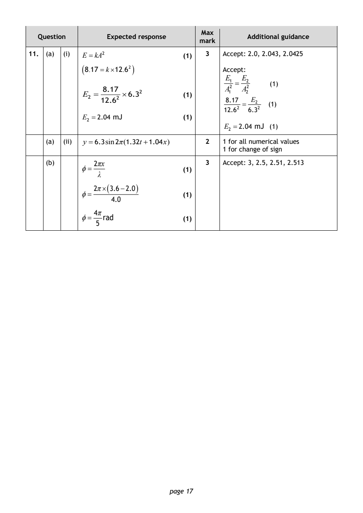
Selectable page text
Max
Question Expected response Additional guidance
mark
11. (a) (i) E =kA² (1) 3 Accept: 2.0, 2.043, 2.0425
( )
8.17 =k×12.6² Accept:
E₁ E₂
= (1)
8.17 A² A₂²
E₂ = ×6.3² (1) 1
12.6² 8.17 E₂
= (1)
12.6² 6.3²
E₂ =2.04 mJ (1)
E₂ =2.04 mJ (1)
(a) (ii) y =6.3sin2π(1.32t+1.04x) 2 1 for all numerical values
1 for change of sign
(b) 2πx 3 Accept: 3, 2.5, 2.51, 2.513
φ= (1)
λ
2π×(3.6−2.0)
φ= (1)
4.0
4π
φ= rad (1)
5
page 17PDF page 18
Question 12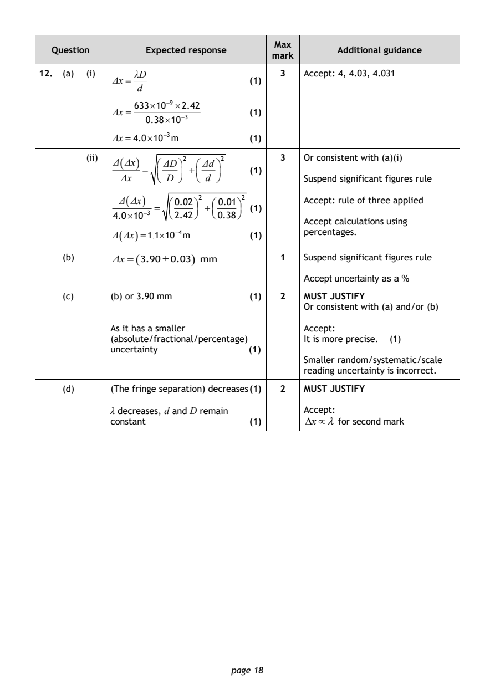
Selectable page text
Max
Question Expected response Additional guidance
mark
12. (a) (i) λD 3 Accept: 4, 4.03, 4.031
Δx= (1)
d
633×10⁻⁹×2.42
Δx= (1)
0.38×10⁻³
Δx=4.0×10⁻³m (1)
(ii) 3 Or consistent with (a)(i)
Δ(Δx)
ΔD² Δd ²
= + (1)
Δx D d Suspend significant figures rule
Δ(Δx) 0.02² 0.01² Accept: rule of three applied
= + (1)
4.0×10⁻³ 2.42 0.38
Accept calculations using
Δ(Δx)=1.1×10⁻⁴m (1) percentages.
(b) Δx =(3.90±0.03) mm 1 Suspend significant figures rule
Accept uncertainty as a %
(c) (b) or 3.90 mm (1) 2 MUST JUSTIFY
Or consistent with (a) and/or (b)
As it has a smaller Accept:
(absolute/fractional/percentage) It is more precise. (1)
uncertainty (1)
Smaller random/systematic/scale
reading uncertainty is incorrect.
(d) (The fringe separation) decreases (1) 2 MUST JUSTIFY
λ decreases, d and D remain Accept:
constant (1) ∆x∝λ for second mark
page 18PDF page 19
Question 13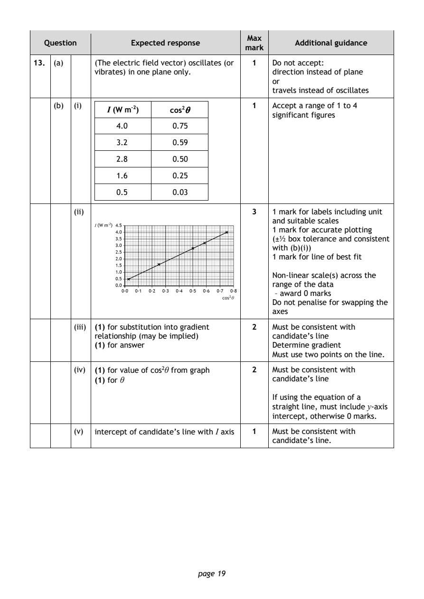
Selectable page text
Max
Question Expected response Additional guidance
mark
13. (a) (The electric field vector) oscillates (or 1 Do not accept:
vibrates) in one plane only. direction instead of plane
or
travels instead of oscillates
(b) (i) 1 Accept a range of 1 to 4
I (W m⁻²) cos²θ
significant figures
4.0 0.75
3.2 0.59
2.8 0.50
1.6 0.25
0.5 0.03
(ii) 3 1 mark for labels including unit
and suitable scales
1 mark for accurate plotting
(±½ box tolerance and consistent
with (b)(i))
1 mark for line of best fit
Non-linear scale(s) across the
range of the data
– award 0 marks
Do not penalise for swapping the
axes
(iii) (1) for substitution into gradient 2 Must be consistent with
relationship (may be implied) candidate’s line
(1) for answer Determine gradient
Must use two points on the line.
(iv) (1) for value of cos²θ from graph 2 Must be consistent with
(1) for θ candidate’s line
If using the equation of a
straight line, must include y-axis
intercept, otherwise 0 marks.
(v) intercept of candidate’s line with I axis 1 Must be consistent with
c andidate’s line.
page 19PDF page 20
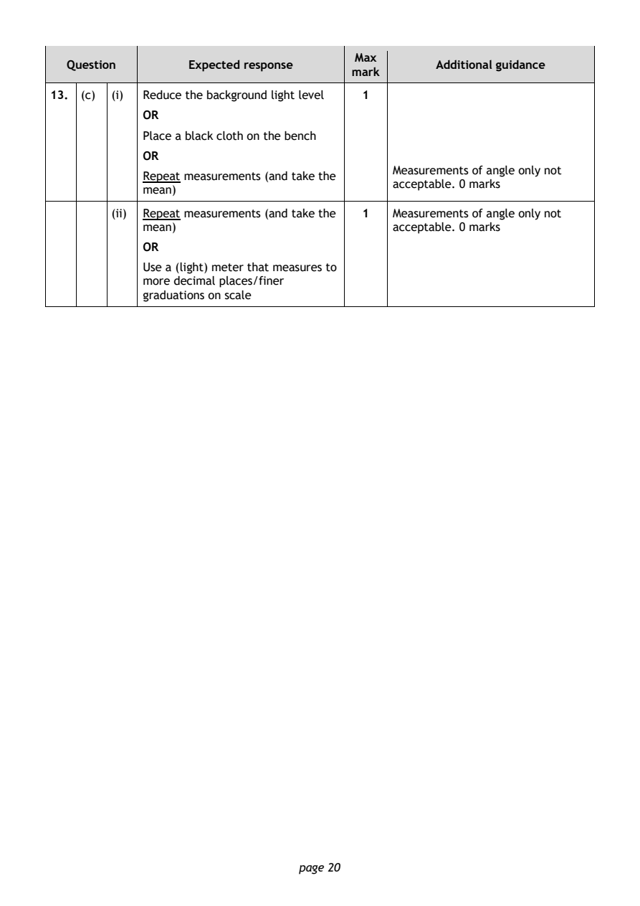
Selectable page text
Max
Question Expected response Additional guidance
mark
13. (c) (i) Reduce the background light level 1
OR
Place a black cloth on the bench
OR
Measurements of angle only not
Repeat measurements (and take the
acceptable. 0 marks
mean)
(ii) Repeat measurements (and take the 1 Measurements of angle only not
mean) acceptable. 0 marks
OR
Use a (light) meter that measures to
more decimal places/finer
graduations on scale
page 20PDF page 21
Question 14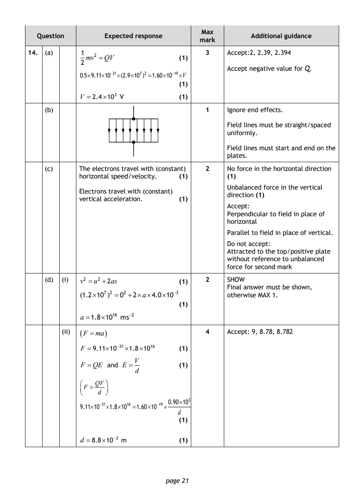
Selectable page text
Max
Question Expected response Additional guidance
mark
14. (a) 1 3 Accept:2, 2.39, 2.394
mv² =QV (1)
2
Accept negative value for Q.
0.5×9.11×10⁻³¹×(2.9×10⁷)² =1.60×10⁻¹⁹×V
(1)
V =2.4×10³ V (1)
(b) 1 Ignore end effects.
Field lines must be straight/spaced
uniformly.
Field lines must start and end on the
plates.
(c) The electrons travel with (constant) 2 No force in the horizontal direction
horizontal speed/velocity. (1) (1)
Unbalanced force in the vertical
Electrons travel with (constant)
direction (1)
vertical acceleration. (1)
Accept:
Perpendicular to field in place of
horizontal
Parallel to field in place of vertical.
Do not accept:
Attracted to the top/positive plate
without reference to unbalanced
force for second mark
(d) (i) v² =u² +2as (1) 2 SHOW
Final answer must be shown,
(1.2×10⁷)² =0² +2×a×4.0×10⁻³ otherwise MAX 1.
(1)
a=1.8×10¹⁶ ms⁻²
(ii) (F =ma) 4 Accept: 9, 8.78, 8.782
F =9.11×10⁻³¹×1.8×10¹⁶ (1)
V
F =QE and E = (1)
d
QV
F =
d
0.90×10³
9.11×10⁻³¹×1.8×10¹⁶ =1.60×10⁻¹⁹×
d
(1)
d =8.8×10⁻³ m (1)
page 21PDF page 22
Question 15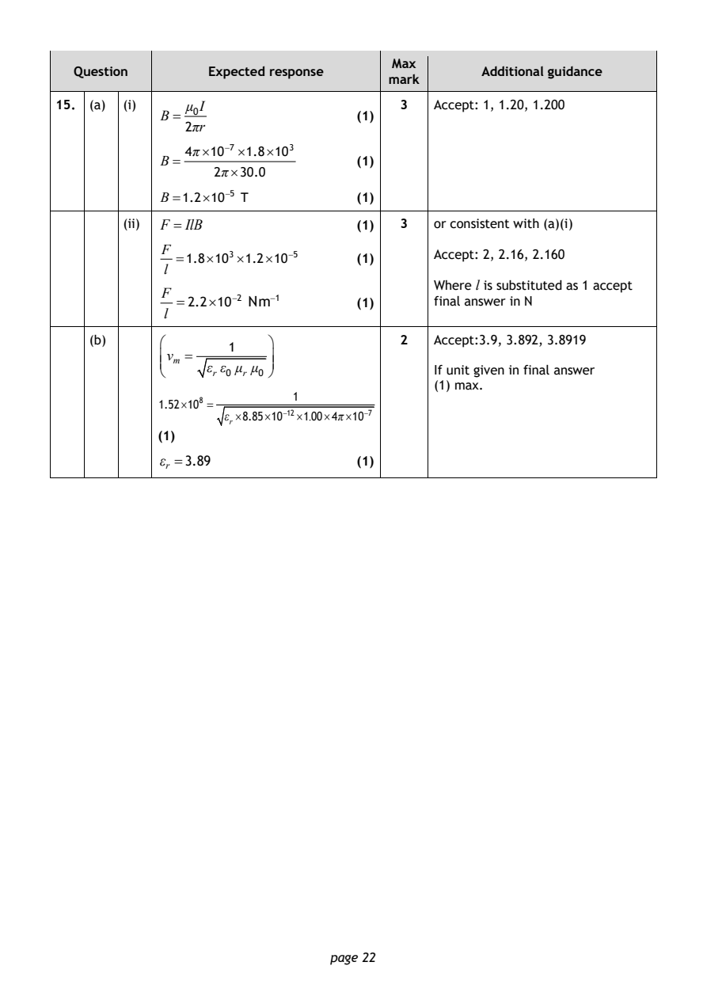
Selectable page text
Max
Question Expected response Additional guidance
mark
15. (a) (i) μ₀I 3 Accept: 1, 1.20, 1.200
B= (1)
2πr
4π×10⁻⁷×1.8×10³
B= (1)
2π×30.0
B=1.2×10⁻⁵ T (1)
(ii) F =IlB (1) 3 or consistent with (a)(i)
F
=1.8×10³×1.2×10⁻⁵ (1) Accept: 2, 2.16, 2.160
l
Where l is substituted as 1 accept
F
=2.2×10⁻² Nm⁻¹ (1) final answer in N
l
(b) 2 Accept:3.9, 3.892, 3.8919
1
vₘ =
εᵣ ε₀ μᵣ μ₀ If unit given in final answer
(1) max.
1
1.52×10⁸ =
εᵣ×8.85×10⁻¹²×1.00×4π×10⁻⁷
(1)
εᵣ =3.89 (1)
page 22PDF page 23
Question 16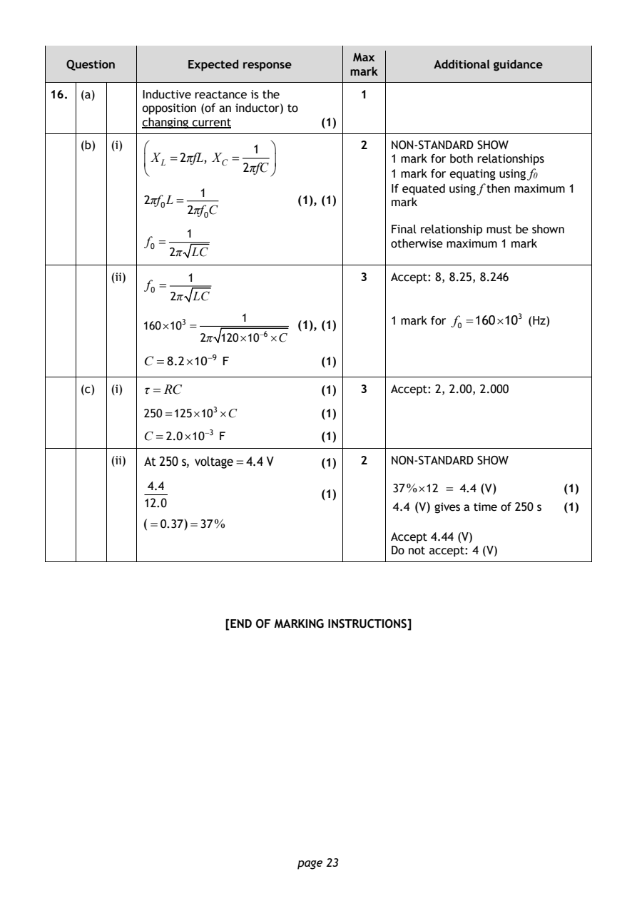
Selectable page text
Max
Question Expected response Additional guidance
mark
16. (a) Inductive reactance is the 1
opposition (of an inductor) to
changing current (1)
(b) (i) 1 2 NON-STANDARD SHOW
X_{L} =2πfL, X_{C} = 1 mark for both relationships
2πfC 1 mark for equating using f₀
If equated using f then maximum 1
1
2πf₀L= (1), (1) mark
2πf₀C
Final relationship must be shown
1
f₀ = otherwise maximum 1 mark
2π LC
(ii) 1 3 Accept: 8, 8.25, 8.246
f₀ =
2π LC
1 1 mark for f₀ =160×10³ (Hz)
160×10³ = (1), (1)
2π 120×10⁻⁶×C
C =8.2×10⁻⁹ F (1)
(c) (i) τ =RC (1) 3 Accept: 2, 2.00, 2.000
250=125×10³×C (1)
C =2.0×10⁻³ F (1)
(ii) At 250 s, voltage=4.4 V (1) 2 NON-STANDARD SHOW
4.4 37%×12 = 4.4 (V) (1)
(1)
12.0
4.4 (V) gives a time of 250 s (1)
(=0.37)=37%
Accept 4.44 (V)
Do not accept: 4 (V)
[END OF MARKING INSTRUCTIONS]
page 23